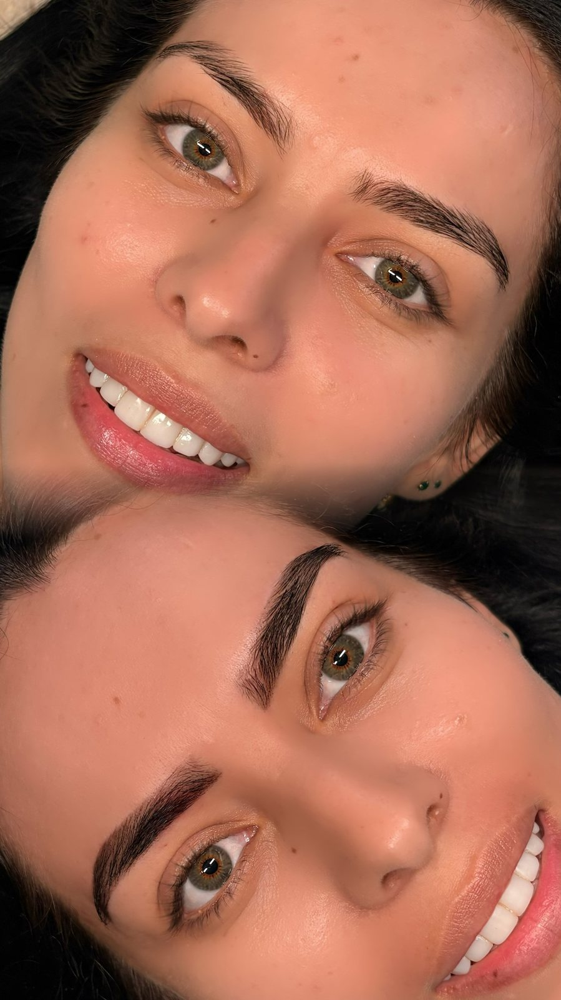
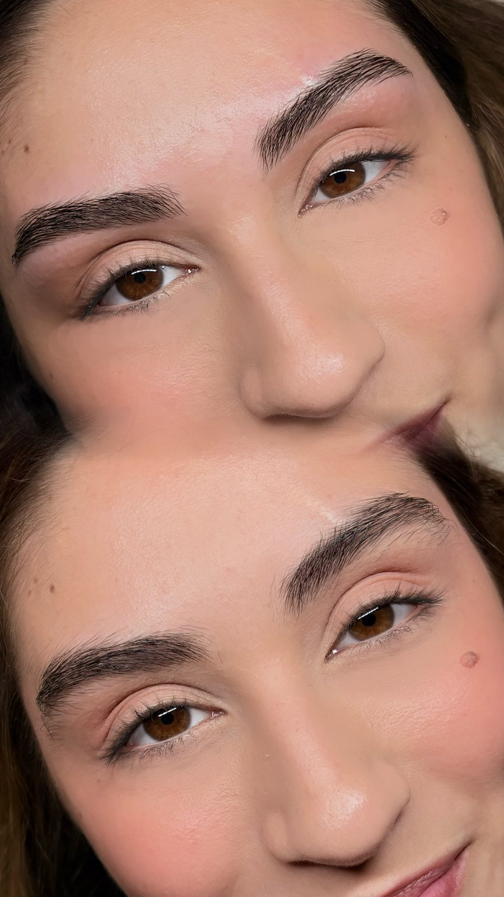
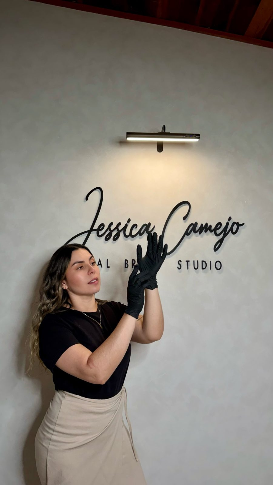
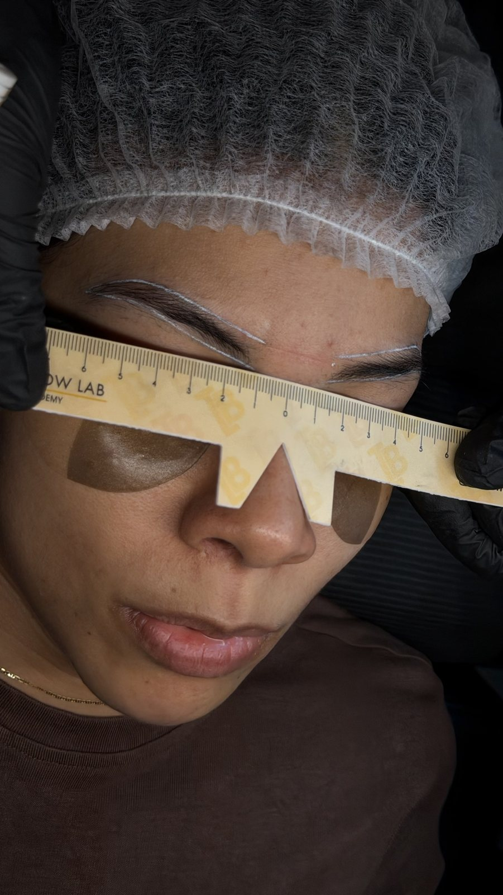
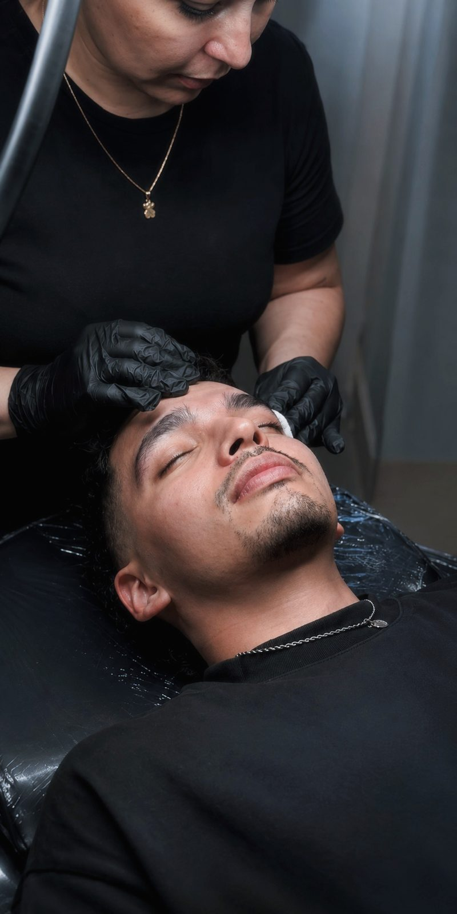
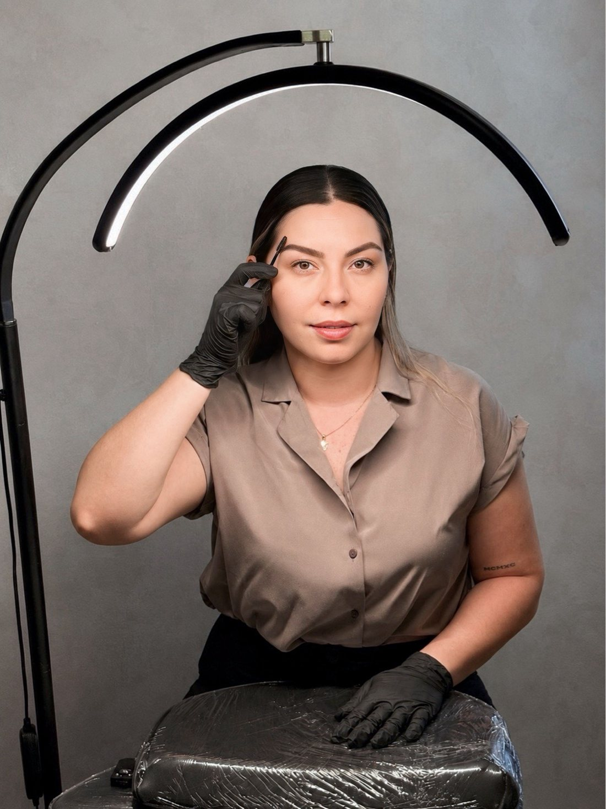

ServiciosDiseñados para cada necesidad
Analizo tu rostro y tus cejas para encontrar la técnica que mejor se adapte a ti.

AntesDespués
Diseño · Depilación con cera · Henna
HennaBrow
Diseño de cejas personalizado según la fisonomía de tu rostro, depilación con cera y sombreado con henna.
La henna aporta definición y apariencia de mayor densidad. Ideal si quieres unas cejas más llenas y marcadas.
- Diseño a medidaSegún tu fisonomía facial
- Depilación con ceraPara una forma limpia y definida
- Sombreado con hennaMás definición y densidad
- $50.000Duración: 1 h 30 min
Diseño · Depilación con cera
NaturalBrow
Diseño de cejas personalizado según la fisonomía de tu rostro y depilación con cera para definir una forma limpia y armónica.
Respeta tu ceja natural. Ideal para mantener tus cejas definidas y en equilibrio con tus facciones.
- Diseño a medidaSegún tu fisonomía facial
- Depilación con ceraForma limpia y armónica
- Resultado naturalRespeta tu ceja
- $40.000Duración: 1 h

AntesDespués AntesDespués
AntesDespués
Técnica estrella
TécnicaReal Brow
Una técnica de embellecimiento de cejas que aplica fibras biocompatibles que simulan el vello natural, creando un efecto de mayor densidad y definición.
Está diseñada para rellenar espacios con ausencia de vello y reconstruir visualmente la forma de tus cejas, con un resultado natural y armónico que respeta las facciones de tu rostro.
- Efecto naturalFibras que simulan el vello
- No quirúrgicoProcedimiento personalizado
- 4 a 8 mesesDuración aproximada, según cada persona y sus cuidados
- Con valoraciónPara saber si tu ceja es apta y definir el valor
Su aplicación requiere valoración previa para determinar si la ceja es apta para el procedimiento y establecer el valor según el grado de ausencia de vello.

Recupera tu vello natural
Rehabilitaciónfolicular
Es un protocolo estético especializado que busca favorecer la recuperación del vello perdido en las cejas, ya sea por malas prácticas de depilación, micropigmentación, tatuajes, pérdida natural del vello o determinadas condiciones médicas.
Mediante microneedling con Dermapen se realizan microperforaciones controladas en la piel que activan los mecanismos naturales de reparación y estimulación cutánea, buscando mejorar las condiciones del entorno folicular.
El objetivo es favorecer un crecimiento más saludable del vello natural y mejorar progresivamente la apariencia y la densidad de tus cejas.
- MicroneedlingCon Dermapen, mediante microperforaciones controladas
- Activos especializadosPéptidos, vitaminas, factores de crecimiento, exosomas y PDRN, según tu caso
- Plan por sesionesSe recomienda un mínimo de 3 sesiones
- $100.000Por sesión, previa valoración
Requiere valoración previa para determinar la viabilidad del protocolo y establecer un plan de sesiones personalizado.
Tu citaAsí es tu experiencia

Valoración
Conversamos sobre lo que buscas y revisamos tu ceja para recomendarte el servicio o el plan ideal para ti.

Diseño a medida
Medimos y dibujamos la forma según las proporciones de tu rostro. No empezamos hasta que te encante.

Aplicación y cuidados
Realizamos el procedimiento con calma, en un espacio pensado para tu comodidad, y te explico los cuidados para cuidar tu resultado.
GaleríaMis trabajos
Resultados reales de clientas de Real Brow Studio. Toca cualquier foto o video para verlo en grande.

Hola, soyJessica Camejo
Especialista en cejas y fundadora de Real Brow Studio
Empecé en el mundo de las cejas motivada por mi interés en la belleza y en cómo pequeños detalles pueden transformar la expresión y la seguridad de una mujer. En esta especialidad encontré la forma de combinar precisión, creatividad y cuidado personal.
Mi filosofía es entender que cada rostro y cada ceja son únicos. Por eso no busco imponer un diseño, sino encontrar el equilibrio que mejor resalte las facciones y la belleza natural de cada persona.
En Real Brow Studio quiero ofrecerte mucho más que un servicio de cejas: una experiencia de cuidado, bienestar y confianza, donde cada detalle está pensado para que te sientas bien contigo misma.
Formación
- Diseño de cejas
- Depilación con cera y sombreado de cejas
- Especialización en Técnica Real Brow
- Rehabilitación folicular de cejas
- Atención personalizada
- Diseño según tu fisonomía
- Resultados naturales y armónicos
Preguntas frecuentesLo que más me preguntan
¿Qué servicio es mejor para mí?
Depende de cómo esté tu ceja hoy y del resultado que buscas. Si no estás segura, reserva una valoración y te recomiendo el servicio o el plan que más te conviene.
¿Por qué la Técnica Real Brow requiere valoración?
Porque primero revisamos si tu ceja es apta para el procedimiento, y el valor se determina según el grado de ausencia de vello y las necesidades de cada ceja.
¿Cuánto dura la Técnica Real Brow?
Es un procedimiento temporal, con una duración aproximada de 4 a 8 meses. Depende de las características de cada persona y de sus cuidados posteriores.
¿Cuántas sesiones de rehabilitación folicular necesito?
Se recomienda un mínimo de 3 sesiones. En la valoración determinamos la viabilidad del protocolo y armamos tu plan de sesiones personalizado.
¿Para quién es la rehabilitación folicular?
Para cejas que perdieron vello por malas prácticas de depilación, micropigmentación, tatuajes, pérdida natural del vello o determinadas condiciones médicas. En la valoración revisamos si el protocolo es viable para ti.
¿Debo pagar un anticipo para reservar?
No. No cobro anticipo para separar tu cita. El pago se hace en efectivo o por transferencia.
¿Qué pasa si no puedo asistir o llego tarde?
Si no puedes asistir, avísame con al menos 24 horas de anticipación. Si pasan 15 minutos de la hora de tu cita y no has llegado, la cita se cancela.
¿Dónde atiendes?
Atiendo con cita previa en Arauca, Arauca, de lunes a sábado de 9:00 a.m. a 6:00 p.m. Escríbeme por WhatsApp para coordinar tu visita.
Reservatu cita
Cuéntame qué servicio te interesa y cuándo te viene bien. Te confirmo la disponibilidad por WhatsApp.
Antes de reservar
- No se cobra anticipo para separar la cita.
- Pagos en efectivo o por transferencia.
- Si no puedes asistir, avisa con 24 horas de anticipación.
- Pasados 15 minutos sin llegar, la cita se cancela.